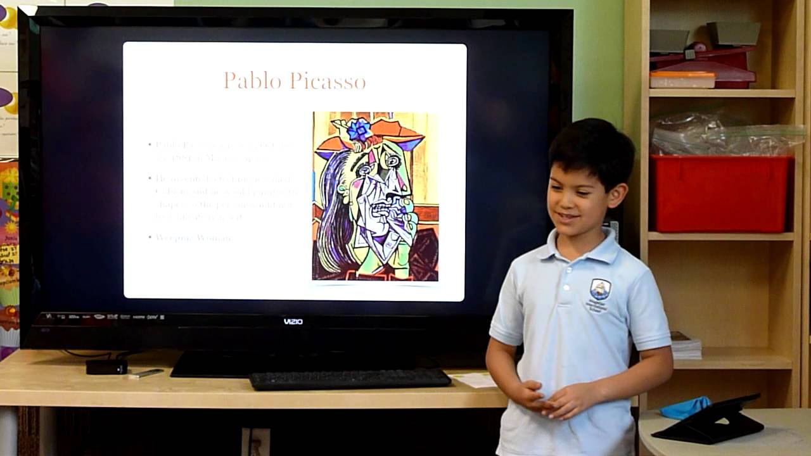
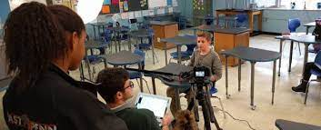
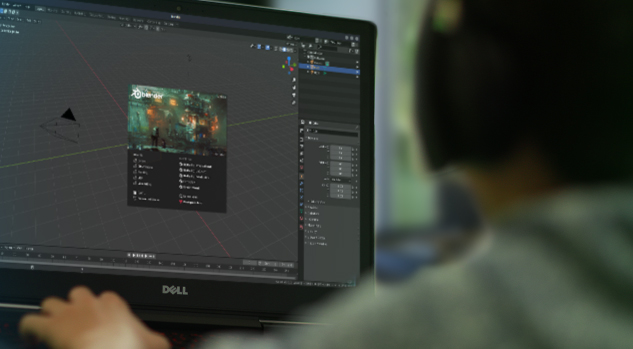

Develop a project using technology to allow students to deepen their learning and show what they know in any subject.

Digital Slideshow
Students can incorporate writing, images, sounds, videos, etc to present their knowledge on a particular subject. Call on them to develop an organizational structure for their content.

Make a Short Video
Collaborating with peers, writing a script, filming, and editing are all useful skills!

3D Modeling
Creating a 3D model demonstrates skill in art, math, and design.